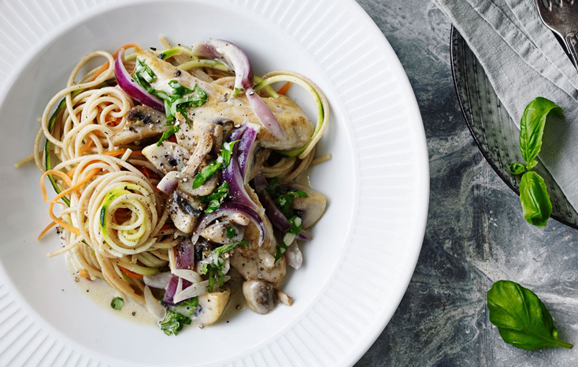
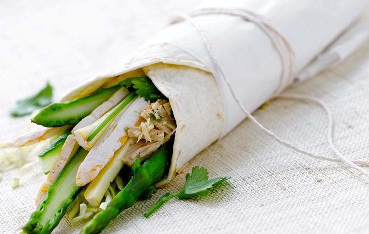

Tirsdag: Grøntsagsspaghetti med cremet svampesovs
OPSKRIFT TIL 4 PERSONER
25 g smør
400 g kyllingeinderfileter
225 g blandede svampe
2 rødløg
1 fed hvidløg
4 dl madlavningsfløde 8%
Salt og peber
3 dl vand
250 g fuldkornsspaghetti
3 gulerødder
1 grøn squash
2 dl grofthakkede basilikumblade
Smelt smørret på panden og steg kyllingekødet ved kraftig varme. Tag kødet op og kom resten af smørret i panden sammen med svampe, løg og hvidløg. Steg det, stadig ved kraftig varme, i ca. 2 min. Kom det stegte kyllingekød tilbage i panden sammen med madlavningsfløde, salt og peber og varm retten godt igennem under omrøring. Imens tilsættes vand og salt i kog i en anden gryde. Kog spaghettien og tilsæt gulerods- og squashstrimler og kog dem med i ca. 1 min. Hæld spaghetti og grøntsager til afdrypning i et dørslag. Anret grøntsagsspaghettien i en stor skål. Hæld den cremede svampesauce over og drys med friske basilikumblade og friskkværnet peber.

Onsdag: Wraps med ost og thaikrydret tun
OPSKRIFT TIL 4 PERSONER
2 dåser tun i vand
1 tsk finrevet limeskal
2 spsk friskpresset limesaft
2 tsk finrevet ingefær
3 spsk hakkede korianderblade
1/2 tsk groft salt
6 tortillas
300 g finstrimlet spidskål
200 g grønne asparges
1 agurk i lange tynde stave
100 g Høng GyldenRød 65+
Hæld vandet fra tunen og bland den med limeskal, -saft, ingefær, koriander og salt. Varm de bløde tortillas efter anvisningen på emballagen. Fordel spidskål, den krydrede tun, asparges, agurk og ost på de lune pandekager. Buk et lille stykke af pandekagen op som bund og rul pandekagen tæt om fyldet. Kom et stykke smørrebrødspapir om den nederste halvdel af wrappen - så man kan "gnave" af den. Spis med det samme.
Torsdag: Kartoffelsuppe med kyllingespyd og wokgrønt
OPSKRIFT TIL 4 PERSONER
1 dl kokosmælk
2 tsk finrevet frisk ingefær
2 tsk karry
1 fed hvidløg
1/2 tsk groft salt
500 g kyllingefilet
4 grilspyd
1 liter kartoffelporresuppe
600 g wokblanding
Rør kokosmælk, ingefær, karry, hvidløg og salt sammen og kom marinaden i en plasticpose. Skær kyllingefileterne i mindre stykker, læg dem i posen og vend dem godt sammen med marinaden. Sæt de marinerede kyllingestykker på grillspyd og grill dem i ca. 3 min. på hver side på en grillpande. Sæt suppen til at koge og tilsæt wokgrøntsagerne. Fordel suppen i 4 skåle og læg et grillspyd over hver skål med et stykke brød til.

Fredag: Pizza med stegte rejer og grønne asparges
OPSKRIFT TIL 4 PERSONER
PIZZABUNDE
10 g gær
2 1/2 dl vand
2 tsk olivenolie
3/4 tsk groft salt
100 g fuldkornshvedemel
250 g hvedemel
TILBEHØR
200 g kogte rejer med halevifte
2 tsk olivenolie
1 spsk finhakket rød chilipeber
2 tsk finrevet citronskal
1 spsk friskpresset citronsaft
300 g grønne asparges
1/2 tsk groft salt
450 g hytteost 4%
175 g mozzarella
1 grøn squash
50 g babysalatblade
PIZZABUNDE: Rør gær og vand sammen i en skål. Tilsæt olie, salt og de 2 slags mel. Lad dejen hæve tildækket i køleskabet i mindst 8 timer - gerne et døgn.
TILBEHØR: Vend rejerne med olie, chili, citronskal og -saft. Sæt 2 bageplader til opvarmning i ovnen. Tag dejen ud på et meldrysset bord og ælt den godt igennem. Del dejen i 2 portioner og rul dem ud til 2 aflange pizzabunde (ca. 28 x 40 cm). Træk pizzabundene over på de varme bageplader. Bag pizzabundene øverst og nederst i ovnen ved 250° og tag efter 10-12 min. - skru ovnen over på grill. Vend aspargesene med salt. Fordel hytteost, mozzarella, asparges og de krydrede rejer på pizzabundene og grill en pizza ad gangen, øverst i ovnen. Pynt pizzaerne med lidt squashstrimler og salatblade og server resten ved siden af.